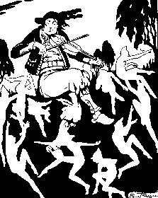

Ar Gorred
Ton
|
1. Paskou Hir, ar c'hemener,
A yaou ta, a yaou ta! (diou wech) A zo aet d'ober al laer, D'abardae'z noz digwener. 2. N'helle mui ober bragoù: Aet an dud d'an armeoù Ouzh re Vro-C'hall hag o roue! 3. Aet eo 'tre ti ar Gorred Gant e bal en-deus toullet Da glask an teñzor kuzhet. 4. An teñzor mad a gavas D'ar ger redas gant mall bras En e wele n'em lakas. 5. -Serrit an nor, serrit kloz! Setu an duzigoù noz! 6. "Dilun, dimeurzh, dimerc'her, Ha diryaou ha digwener!" 7. -Serrit an nor, mignoned, Setu, setu ar c'horred! 8. Maint o tont tre-barzh ar porzh, Maint ennan o tañsal forzh. |
9. "Dilun, dimeurzh, dimerc'her,
Ha diryaou ha digwener!" 10. - Maint o pignad war da dei! Maint 'ober eun toull enni! 11. - Krabet out, mignonig paour, Taol kuit buhan an teñzour! 12. Paskou paour, te zo lazet! Taol warnout dour benniget! 13. Taol da linsel war da benn; Paskou, na fich ket a-grenn! 14. - siwazh-din! maint o c'hoarzhiñ! Neb a zidec'hfe ve fin! 15. Aotrou Doue! Setu 'nan! He benn dre'n toull a welan! 16. E zaoulagad ruz glaou tan! Ema en-traoñ gant ar peulvan! 17. 'Trou Doue! Unan, daou, tri! 'Mond endro war al leur-zi! 18. Lamm a reont ha kounnariñ! Taget on, Gwerc'hez Vari! |
19. - "Dilun, dimeurzh, dimerc'her,
Ha diryaou ha digwener!"- 20. - Daou, tri, pevar,pemp ha c'hwec'h! - "Dilun, dimeurzh, dimerc'her!" 21. "Kemenerig, kemener! Roc'hal rez aze, larer! 22. "Kemener,kemenerig, Tenn da fri 'maez un tammig! 23. "Deuz da ober eun dro zañs, Ni zesko dit ar c'hadañs! 24. "Kemenerig, kemener! Dilun, dimeurzh, dimerc'her. 25. "Kemenerig, te zo laer! Dilun, dimeurzh, dimerc'her. 26. "Deuz d'on laerez ur wech-all, Deuz, kozh kemenerig fall! 27. "Ni a zesko dit ur bal A ray d'az mell-kein strakal. "Pezh arc'hant korr tra na dal!" |
Variantes tirées du premier carnet de collecte de La Villemarqué

|
P. 200
(6) Dilun, dimeurz, dimerc'her Ha diryaou ha digwener . (5) Charret an nor! Charret klous! Chetu an dudigoù nouz! (7) Charret klous! Charret potred! Chetu ar c'horiganet! (8) Chetu mant tont bars ar porz, Ha m'eno da zañsal fors! (12) Diwall, Janig, mar keret! Oet da glas dour bennighet! (A) En ho kwele 'n-em boutet! Sarret hen klous war ho lec'h! (A) Climb up into your box bed! Shut the door behind you! (A) Grimpez dans votre lit (clos)! Fermez-le bien derrière vous! (10) Chetu man war toen an ti, Man ober un toull en hi! (12) Lazet out, ma breur paour, Kabet... aour! (11) Taol 'maes fonnus, fonnus an teñsor! Paskou, lazhet out! (13) Taol da licher war ta benn, Ha na fichet ket a-grenn! |
(14) Klevez ket nhe c'hoarzhiñ?
Mar tec'hez port c'hwi vo fin. (15-1) - Aotrou Dou! Chetu 'nan! (16-1) He zaoulagad 'vel tan! (15-2) Chetu he benn da ghetañ, E penn dre toull da ghetañ! (16) E lagad vel daou glao tan, ... ma tont en-traoñ! (17) Tro Doue! Unan, daou, ha tri, O vont endro war al leur-zi! (20) Chetu pevar pemp ha huec'h! (25) Kimenerig, kimener Te vo lazhet, te zo laer! (B) Plec'h ma an argant? Lar de... ha buhan! Ple ma ouet an teñsor? Palec'h... an aour? ... an alfe dhe digor? Deus da furchal hon douar! Respont-ta! Te zo bouzar? (B) Where is the money? Tell us! Quick! Our treasure, where has it gone? And where has it gone, our gold? Fetch the key to open it! Come and search our field! Now, answer! Are you deaf? |
(B) Où est l'argent? Dis-nous le vite! Où est passé le trésor? Et où est passé notre or? Va chercher la clé pour l'ouvrir! Viens fouiller notre champ! Réponds! Es-tu sourd? (21-2) Roc'hañ rez aze, lerar! Longitudinalement dans la marge droite: (C) Dam kuit! Chetu kog a gan! Mont a rent da c'houeo tan! (C) Let us be off, the cock crows! They will come and kindle the fire! (C) Partons, voilà que le coq chante! Ils vont allumer le feu! (26) Deut hon laered ur wechall! Deut endro, kemener fall! (27) Ni ziskei dit ur ball, Lako ta kein da strakal! (23) Deus da ober en dro dañs! Ni ziskei dit ar c'hadañs! |
Kempennet gant Chr. Souchon